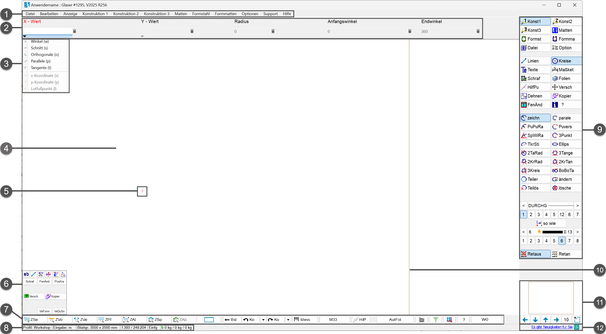

Die ISBCAD Programmoberfläche ist die zentrale Arbeitsplattform. Hier wählen Sie Funktionen aus, machen alle notwendigen Angaben, zeichnen und bearbeiten Ihre Pläne. Damit Sie die Programmoberfläche möglichst intuitiv nutzen können, erhalten Sie mittels interaktiver Textfelder (Tooltipps) zusätzliche Informationen, wenn Sie den Mauscursor über eine Schaltfläche bewegen. Die Programmoberfläche gestaltet sich unabhängig vom Installationsumfang. Wenn Sie Funktionen ausführen wollen, die in Ihrer Installation nicht enthalten sind, werden Sie durch eine Meldung darauf hingewiesen.
Die Titelleiste des Programmfensters enthält Informationen zum Anwendernamen, Ihrer Kundennummer, der Programmversion und der aktuellen Revision. Nach dem Speichern der Zeichnung wird ebenfalls der Dateipfad angezeigt.
 |
|
||||||||||||||||||||||||||||||||
Siehe auch:
·Listen, Systemeinstellungen und weitere Konstruktionsfunktionen
Programmkonfiguration:
·Größe der Programmelemente anpassen (Einstellungen-Dialog)
·Farben, Menü- und Schaltflächendarstellung anpassen (Systemdaten-Dialog)